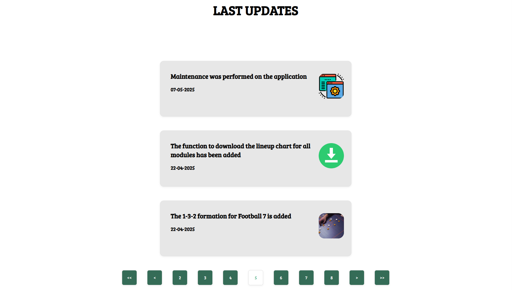

With Line Up Maker, you can make your own football formation. You can create your own players, assign a number, and even upload a picture of them. You can also download an image of the formation and export or import formations.
Additionally, you can stay up to date with the latest news from the football world. Get real-time updates on matches, transfers, player performances, and other important events happening in the sport.
